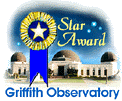

Simply put, the Sloan Digital Sky Survey (SDSS) was the most ambitious astronomical survey ever undertaken. It has provided detailed optical images covering more than a quarter of the sky, and a 3-dimensional map of about a million galaxies and quasars. As the survey progressed, the data was released to the scientific community and the general public in annual increments.
The SDSS used a dedicated, 2.5-meter telescope on Apache Point, NM, equipped with two powerful special-purpose instruments. The 120-megapixel camera imaged 1.5 square degrees of sky at a time, about eight times the area of the full moon. A pair of spectrographs fed by optical fibers measured spectra of (and hence distances to) more than 600 galaxies and quasars in a single observation. A custom-designed set of software pipelines kept pace with the enormous data flow from the telescope.

The SDSS completed its first phase of operations — SDSS-I — in June, 2005. Over the course of five years, SDSS-I imaged more than 8,000 square degrees of the sky in five bandpasses, detecting nearly 200 million celestial objects, and it measured spectra of more than 675,000 galaxies, 90,000 quasars, and 185,000 stars. These data have supported studies ranging from asteroids and nearby stars to the large scale structure of the Universe.
The SDSS then entered a new phase, SDSS-II, continuing through June, 2008. With a consortium that included 25 institutions around the globe, SDSS-II carried out three distinct surveys — the Sloan Legacy Survey, SEGUE, and the Sloan Supernova Survey — to address fundamental questions about the nature of the Universe, the origin of galaxies and quasars, and the formation and evolution of our own Galaxy, the Milky Way.
Funding for the SDSS and SDSS-II was provided by the Alfred P. Sloan Foundation, the Participating Institutions, the National Science Foundation, the U.S. Department of Energy, the National Aeronautics and Space Administration, the Japanese Monbukagakusho, the Max Planck Society, and the Higher Education Funding Council for England.
The SDSS was managed by the Astrophysical Research Consortium for the Participating Institutions. The Participating Institutions were the American Museum of Natural History, Astrophysical Institute Potsdam, University of Basel, Cambridge University, Case Western Reserve University, University of Chicago, Drexel University, Fermilab, the Institute for Advanced Study, the Japan Participation Group, Johns Hopkins University, the Joint Institute for Nuclear Astrophysics, the Kavli Institute for Particle Astrophysics and Cosmology, the Korean Scientist Group, the Chinese Academy of Sciences (LAMOST), Los Alamos National Laboratory, the Max-Planck-Institute for Astronomy (MPIA), the Max-Planck-Institute for Astrophysics (MPA), New Mexico State University, Ohio State University, University of Pittsburgh, University of Portsmouth, Princeton University, the United States Naval Observatory, and the University of Washington.
www.sdss.org was a winner of the Griffith Observatory's Star Award 